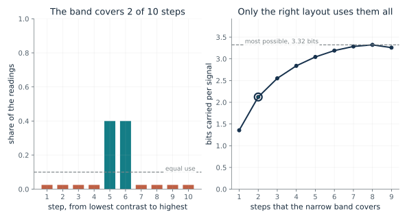
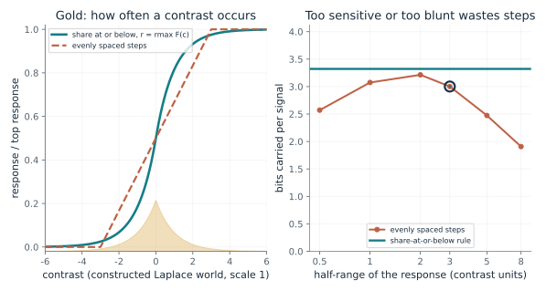
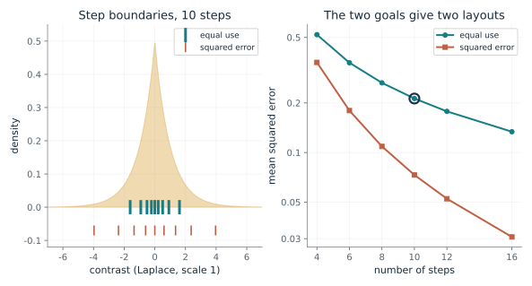
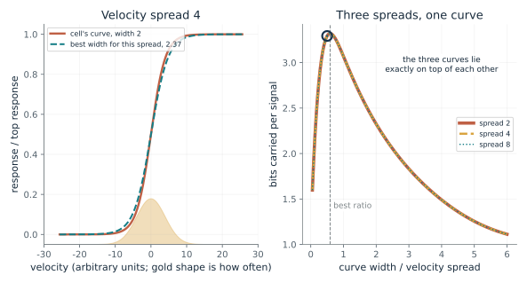
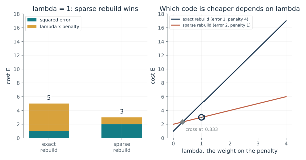
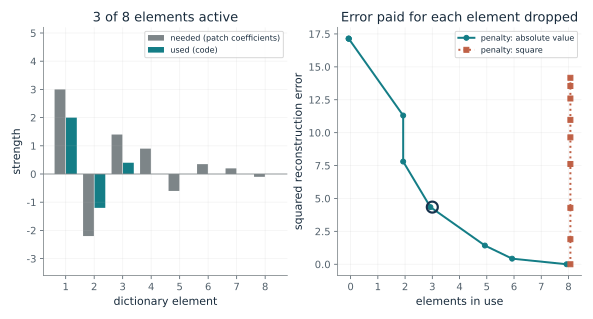
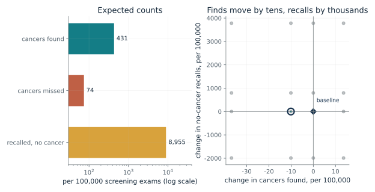

How many bits can ten steps carry, and when do they carry them all?
From Chapter 3, A cell spent its few steps where the world was crowded
A cell can signal ten distinguishable levels. If most readings crowd into a narrow band, how much of the 3.32 bits does an evenly spaced layout waste?
A level that is used rarely adds little to what the signal can tell you, and a level that is used all the time cannot tell you which of the crowded readings occurred. Entropy averages the surprise of each level weighted by its share, and it is largest when the shares are equal. The ceiling log2 M is therefore a statement about use, not about how many levels there are.
Predict first: With 800 of 1,000 readings in a band that evenly spaced steps cover with only 2 of the 10 steps, predict to the nearest bit how many of the 3.32 possible bits the signal carries.

Steps covering the narrow band: 2 · Readings in the band (of 1,000): 800
What happens: With eight fine steps in the band and one in each tail, every step holds 100 of the 1,000 readings and the signal carries log2 10 = 3.32 bits. Compare the default, where two steps hold the band and the signal carries 2.12.
With the band covering 2 steps, the busiest step holds 40 percent of the readings and the ten levels carry 2.12 of a possible 3.32 bits. Placement of the steps, not their number, set the shortfall.
- Bits carried
- 2.12
- Most possible, log2 10
- 3.32
- Share of the most
- 64 percent
- Busiest step
- 40 percent of readings
A sensor or code with a fixed number of levels has a ceiling set by its level count and a shortfall set by how its levels are placed. Placement is the part a designer or a cell can change.
Laughlin measured contrast in outdoor scenes and the response of fly cells; the ten-level drawing in his note is an illustration, and no bits were counted in a real cell.
Any quantizer or code with M levels has the same ceiling, log2 M bits, and reaches it only when its levels are used equally often.
Show the calculation
Shares: band steps 0.4 each, tail steps 0.025 each. H = -sum p log2 p = 2.12 bits against log2 10 = 3.32.
The equations and symbols
- M
- number of distinguishable levels (10 here)
- p_i
- share of readings that land in level i
- H
- bits actually carried per signal, on average
- H_max
- the most any use of M levels can carry, reached when all p_i equal 1/M
Ten equally distinguishable levels, no noise, and readings spread evenly within the band steps and within the tail steps. This is the capacity of an idealized signal, not a measurement of the fly cell.
Check your understanding: How many bits can 16 equally used levels carry, and how many levels do 5 bits need?
Book source: Chapter 3, A cell spent its few steps where the world was crowded. Illustration C03-D01. Formula. Book formula and the chapter's constructed 1,000-reading example (800 in a narrow band, 100 in each tail). Laughlin did not count ten steps in a real cell; the ten levels are an illustration. Spreading band and tail readings evenly inside their steps is this companion's simplification. The layouts where the band covers 1 to 9 evenly spaced steps, and the 500 and 950 band shares, are the companion's constructions; the chapter gives only the 800, 100, 100 split with eight band steps and one step per tail.
What does the share-at-or-below rule buy over evenly spaced steps?
From Chapter 3, A cell spent its few steps where the world was crowded
If contrast is mostly small, how does a response built from the share of readings at or below each contrast compare with one spaced evenly across the range?
Where readings crowd, a small change in contrast passes many readings, so the share at or below climbs fast and the response with it. Each response step then catches the same share of readings. A straight-line response gives the middle of the range the same number of steps as the far tails, which almost nothing visits.
Predict first: An evenly spaced response clips the extremes if its range is too narrow and leaves its end steps idle if too wide. Predict which half-range, from 0.5 to 8, carries the most bits.

Half-range of the evenly spaced response: 3 · Number of response steps: 10
What happens: A half-range of 0.5 clips about 61 percent of readings into the end steps and carries 2.57 bits. Of the listed half-ranges, 2 carries the most (3.21 bits; a finer search puts the best near 1.7 with 3.23 bits); only the share-at-or-below curve reaches 3.32 whatever the scale of the world.
With a half-range of 3 the evenly spaced response carries 3 of 3.32 bits, neither heavily clipped nor leaving its end steps idle. The share-at-or-below curve uses every step 10 percent of the time for any scale of world.
- Bits, evenly spaced
- 3
- Bits, share rule
- 3.32
- Readings clipped at an end
- 5 percent
- Levels
- 10
The rule turns a measured world into a predicted response curve, which Laughlin could then check against a cell. A machine can do the same with a measured input distribution, which is how a photo's brightness values are spread across the available range.
Laughlin's cell curve and his cumulative curve were both S shapes that matched by eye in six cells of one class; no fit statistic or bits were reported.
Histogram equalization applies the same share-at-or-below curve to spread an image's brightness values. The match is in the curve alone, and it does not mean the cell computes like an image program.
Show the calculation
Clipped fraction = exp(-3) = 0.0498. Entropy of the 10 step probabilities = 3 bits; the rule gives log2 10 = 3.32.
The equations and symbols
- c
- one contrast, a change as a fraction of its surroundings
- C
- the contrast the world hands the cell at random
- F(c)
- share of readings at or below c, a number from 0 to 1
- r_max, r(c)
- the top response, and the response to contrast c
Continuous input, zero response floor, equal-sized response steps, equally steady response at every level and information as the only goal; these are the rule's assumptions, not findings of Laughlin's. The linear comparison clips contrasts beyond its half-range into the end steps.
Check your understanding: For F(c) = c^2 on the unit interval, what share of readings fall in each of four equal response steps?
Book source: Chapter 3, A cell spent its few steps where the world was crowded. Illustration C03-D02. Constructed example. Book formula. The world here is a constructed Laplace distribution of contrast with scale 1 (the shape the chapter uses for a later example), not Laughlin's 15,000 readings, which the chapter does not tabulate. The evenly spaced comparison is the companion's own.
Does telling inputs apart give the same layout as rebuilding them?
From Chapter 3, Counting information says nothing about what the fly needs
If a later stage must rebuild each contrast closely, where should the step boundaries go compared with the equal-use layout?
When a miss costs its size squared, a rare large contrast that lands in a wide step is expensive, so the layout gives it finer steps than equal use would. The cost is that the middle steps get wider than they need to be to tell commonplace readings apart, and the code carries fewer bits.
Predict first: Predict whether squared-error boundaries sit nearer to the middle or farther out than the equal-use boundaries, and by about how much the squared error of a ten-step code changes.

Number of steps: 10 · Layout highlighted: equal use
What happens: The squared-error layout reaches out to 3.97 where equal use stops at 1.61, and the two end steps hold under 1 percent each. Its squared error is 0.0731 against 0.213, about 2.9 times smaller, at a cost of 0.47 bits (2.85 against 3.32).
With 10 steps, the equal use layout puts its outermost boundary at 1.61 and has squared error 0.213, against 0.0731 for the other layout. Equal use carries 3.32 bits; the squared-error layout trades some of that for a smaller miss on large contrasts.
- Outermost boundary
- 1.61
- Bits carried
- 3.32
- Squared error
- 0.213
- Squared error of the other layout
- 0.0731
A code is good or bad relative to what the next stage does with it. Equal use maximizes information; it does not minimize the cost of a large miss.
The note does not say what a fly's later stages need, so nothing here says which layout the fly uses.
A quantizer designer picks the layout by the cost to be minimized: equal use for telling inputs apart, squared-error design for rebuilding them.
Show the calculation
Equal-use boundaries are the quantiles F^-1(k / M), where F^-1(u) = ln(2u) for u below 0.5 and -ln(2(1 - u)) above. Squared-error boundaries sit midway between neighboring centroids at convergence.
The equations and symbols
- b_k
- the k-th boundary between steps, chosen so each step holds 1/M of the readings
- q_i
- the contrast the receiver assumes when step i is signaled
- f(c)
- the input density; here Laplace with scale 1, f(c) = exp(-|c|) / 2
- M
- number of steps
Laplace contrast with scale 1, squared error as the cost, and each step's rebuilt value set to the mean of the readings in it. The result is not claimed for other distributions or costs, and it says nothing about what a fly's later stages need.
Check your understanding: For four equal-use steps on a Laplace density with scale 1, what are the three boundaries? Use F^-1(u) = ln(2u) for u below 0.5.
Book source: Chapter 3, Counting information says nothing about what the fly needs. Illustration C03-D03. Constructed example. The chapter's own ten-step Laplace example: equal-use boundaries at plus or minus 0.22, 0.51, 0.92 and 1.61 and squared-error boundaries at plus or minus 0.60, 1.35, 2.37 and 3.97. The companion recomputes these and adds other step counts. The chapter calls the comparison this book's calculation for one distribution and one cost.
Why must a response curve stretch when the spread of its input changes?
From Chapter 3, A motion cell stretched its curve when motion changed
If a cell's velocity input doubles in spread, what does it do to a curve that was best before?
Stretching the input and the curve together changes nothing about which response step each reading lands in. So the bits carried are a function of one number, the width divided by the spread, and the best width scales with the spread. The three curves on the right lie exactly on top of each other for that reason.
Predict first: A curve of width 2 is close to best when the velocity spread is 4. If the spread doubles to 8 and the curve stays put, predict whether it loses a little or a lot of the 3.32 bits.

Velocity spread: 4 · Width of the cell's curve: 2
What happens: At spread 8 a curve of width 2 carries 2.80 bits, about 0.52 below the 3.32 reached at the best width, 4.73. The best width is 0.59 times the spread, so doubling the spread doubles the best width.
At spread 4 a curve of width 2 carries 3.29 bits, against 3.32 at the best width, 2.37. The best width is 0.592 times the spread whatever the spread, so the curve must stretch in proportion.
- Bits carried
- 3.29
- Bits at the best width
- 3.32
- Width / spread
- 0.5
- Best width / spread
- 0.592
A code fitted to one spread is mismatched when the spread changes, and the fix is to rescale it. A machine whose inputs change scale faces the same question; the chapter notes that neither the sparse-coding model nor the mammography software was tested for it.
H1, a blowfly motion cell that fires spikes, widened its response curve when the velocity spread widened; curves nearly coincided once velocity was in units of its spread and firing rate in units of its own average. This is one cell type in one species.
Normalizing an input by its own spread before a fixed code is the machine counterpart of a curve that stretches; this is an engineering practice, not a claim about cells.
Show the calculation
Boundaries in velocity are width x ln(k/(10 - k)); each step's probability is a difference of normal cumulative values at boundary / 4. Width / spread = 0.5 gives 3.29 bits.
The equations and symbols
- sigma
- spread of the input velocity (normal, mean 0)
- w
- width of the cell's S-shaped curve, in velocity units
- p_k
- share of the time response step k is used, for M = 10 equal response steps
- Phi
- the standard normal cumulative curve
- H
- bits carried per signal; it depends only on w / sigma
Noiseless response read out in ten equal steps, normal velocity with mean zero, and a logistic curve family. The paper's own information test was a calculation on the measured H1 curve for the measured input, not this one, and the other stretches were simulated, not recorded. The paper reports the rescaling broke down at very large spreads.
Check your understanding: The best width is about 2.37 at spread 4. What is the best width at spread 8, and at spread 2?
Book source: Chapter 3, A motion cell stretched its curve when motion changed. Illustration C03-D04. Model. Companion calculation in the spirit of the chapter's description of Brenner and colleagues (2000). The chapter reports no formula, no curve family and no bit values; the logistic curve, the normal velocity and the ten equal response steps are made up here.
When does a less exact rebuild beat a more exact one?
From Chapter 3, A model told to use few elements grew detectors like those in cortex
One code rebuilds a patch more exactly but uses many elements; another is less exact but sparse. Which does the objective prefer?
The first term wants an exact rebuild, and the second wants few or weak elements. A code that is cheap on one is dear on the other, so the weight lambda decides. With a lambda of zero the second term vanishes, and the more exact code wins.
Predict first: At lambda 0 the exact rebuild wins. Predict the value of lambda above which the sparse rebuild (error 2, penalty 1) starts to win.

Penalty weight lambda: 1 · Squared error of the sparse code: 2
What happens: At lambda 1 the costs are 5 and 3, so the model prefers the less exact, sparse rebuild. They tie at lambda = 1/3; at lambda 0 the exact rebuild wins.
At lambda 1 the exact rebuild costs 5 and the sparse rebuild costs 3, so the model prefers the sparse rebuild. The two cost the same at lambda = 0.333; the less exact code wins above that.
- Cost, exact rebuild
- 5
- Cost, sparse rebuild
- 3
- Cheaper
- sparse rebuild
- Crossover lambda
- 0.333
Any objective that mixes accuracy with a cost on complexity has a weight that decides what counts as good. That weight is a design choice, not a measurement.
In the study, a demand to be accurate and sparse was enough to make learned elements that looked like simple cells, judged by eye and by two averages; this is partial evidence that such a demand could shape the cells, not proof that it does.
The arithmetic is dictionary learning: a set of elements is built from data under a cost like E. The model's objective is a specification, not a model of behavior.
Show the calculation
Exact: 1 + 1 x 4 = 5. Sparse: 2 + 1 x 1 = 3. Crossover: 1 + 4 L = 2 + L gives L = 0.333.
The equations and symbols
- I
- the image patch
- phi_i, a_i
- learned image element i and how strongly it is used
- S
- the penalty on element use
- lambda
- nonnegative weight on the penalty
Two made-up codes with stated squared errors and penalties. Olshausen and Field set the balance between the two terms themselves, and the paper had no new recordings from cortex.
Check your understanding: With sparse error 2 and penalty 1, and exact error 1 and penalty 4, which code wins at lambda 0.25?
Book source: Chapter 3, A model told to use few elements grew detectors like those in cortex. Illustration C03-D05. Constructed example. The chapter's constructed comparison: squared error 1 with penalty 4 against squared error 2 with penalty 1, costs 5 and 3 at lambda 1. The companion adds other lambda values and other errors for the sparse code. The equation is a simplified form of the model's objective, not an established equation for cortex.
What does the sparsity penalty do to a patch's coefficients?
From Chapter 3, A model told to use few elements grew detectors like those in cortex
Given the strength each element would need to rebuild a patch exactly, how many elements stay active as the penalty grows?
With an orthonormal dictionary, each coefficient can be chosen on its own. The derivative of (c - a)^2 + lambda |a| is zero at a = c - lambda/2 for a positive c, so a coefficient smaller than lambda/2 is best set to zero and a larger one shrinks by lambda/2. The squared penalty has a derivative that vanishes at zero, so it never forces zeros.
Predict first: With the absolute-value penalty, predict how many of the eight elements stay active at lambda 2, and which ones.

Penalty weight lambda: 2 · Penalty shape S: absolute value
What happens: Every coefficient below lambda/2 = 1 is dropped, so three of eight stay (3.0, -2.2 and 1.4, each shrunk by 1 to 2.0, -1.2 and 0.4) at a squared error of 4.34. With the square penalty all eight stay at any lambda.
With the absolute-value penalty and lambda 2, every coefficient smaller than lambda/2 = 1 is dropped and the rest shrink by that amount. 3 of 8 elements stay active at a squared error of 4.34.
- Elements active
- 3
- Squared error
- 4.34
- Total cost E
- 11.5
- Energy in the patch
- 17.1
Few active elements is a goal that has to be written into the cost. Which shape of penalty is used decides whether the result has exact zeros or only small values.
Most learned elements in the study sat in one place, ran along one direction and picked one size of detail, as simple cortical cells do; the likeness was judged by looking, and the model's elements were about 1.3 times longer than wide against about 2 for the cited cells.
The toy is the coding step of dictionary learning with a fixed dictionary: a specification, not a model of any trained system.
Show the calculation
Squared error = 4.34, penalty term = 2 x 3.6, total E = 11.5.
The equations and symbols
- c_i
- strength element i needs to rebuild the patch exactly (made-up values)
- a_i
- strength the code actually uses
- lambda
- weight on the penalty
- S
- the penalty shape, absolute value or square
A fixed orthonormal dictionary, so minimizing E splits into one-number problems. The paper learned 192 elements from 16 by 16 patches of natural images; this toy fixes an orthonormal dictionary and learns nothing. The chapter does not state the paper's penalty function, and the paper did not require the other coefficients to be exactly zero.
Check your understanding: With the absolute-value penalty and lambda 4, which coefficients of 3.0, -2.2, 1.4 survive and how strong are they?
Book source: Chapter 3, A model told to use few elements grew detectors like those in cortex. Illustration C03-D06. Model. The companion's own toy built on the chapter's objective. The chapter does not state a penalty shape and does not give this closed form. The eight coefficients are made up, and the dictionary is taken as orthonormal so the elements do not overlap. No learning of elements is done here, only the coding step.
What do reported sensitivity and specificity mean in counts?
From Chapter 3, Software marks on mammograms of 300,000 women were not linked to better readings
As a what-if, if marks on a mammogram changed sensitivity by 2 points and specificity by 3 (a combination neither study reported), how many cancers and how many recalls would change per 100,000 exams?
Sensitivity applies to the small group with cancer, and specificity applies to the large group without. A 2-point change on about 505 cancers is about 10; a 3-point change on about 99,495 exams without cancer is about 2,985. With the Lehman cancer rate and sensitivity 87.3, the arithmetic recall rates at specificity 90.2 and 87.2 are 10.2 and 13.2 percent. They land near the recalls Fenton reported (about 10 and about 13 in 100) because recalls are dominated by women without cancer; that is expected from the arithmetic and is not a validation of it, and the two studies are not pooled.
Predict first: Lehman's sensitivity gap is 2 points. Predict whether it is worth more cancers or fewer than 100 per 100,000 exams, and how it compares with the recall change from Fenton's specificity drop of 3 points.

Sensitivity (percent): 85.3 · Specificity (percent): 91.0
What happens: A what-if: hold sensitivity at Lehman's 87.3 and let specificity fall from Lehman's 91 percent to the 87.2 percent Fenton reported after adoption. This mixes two studies the chapter does not pool, so it is arithmetic only. Finds are unchanged and the arithmetic adds about 3,781 recalls of women without cancer per 100,000 exams. Two points of sensitivity are only about 10 cancers; the recall rate rises from 9.4 to 13.2 percent.
At sensitivity 85.3 and specificity 91, about 431 cancers found and 8,955 women without cancer recalled per 100,000 exams. Against Lehman's no-software baseline (sensitivity 87.3, specificity 91), finds change by -10 and recalls by 0. Lehman's 2-point gap was not significant and both studies are observational: arithmetic, not an effect.
- Cancers found
- 431
- Cancers missed
- 74
- Recalled with no cancer
- 8,955
- Recall rate
- 9.4 percent
A rate that looks small can be a large count, and a mark that asks for a second look costs attention whether or not it helps. The chapter's studies did not measure that cost; it is an inference.
The reader is the brain side: a radiologist who must review and dismiss marks, with limited attention. The studies did not measure attention.
The software is the machine side: marks built to flag what a reader might drop. In Lehman's data they were not linked to better accuracy overall.
Show the calculation
Cancer rate = 3,159 / 625,625 = 0.00505. Cancers per 100,000 = 505. Found = 505 x 0.853 = 431. No-cancer recalls = 99,495 x 0.09 = 8,955.
The equations and symbols
- N
- number of screening exams (100,000 here)
- pi
- cancer rate, 3,159 of 625,625 = 0.00505, from the chapter's counts
- s_e
- sensitivity, the share of cancers a reading finds
- s_p
- specificity, the share of examinations without a cancer diagnosis whose reading was negative
The rates are observational, model-derived estimates from two studies that differ in years and design and are not pooled. Applying one study's cancer rate to the other's specificity is arithmetic for illustration. The studies do not show why marks did not help, and this is not advice about any screening decision.
Check your understanding: At a cancer rate of 3,159 per 625,625, about how many cancers are there per 100,000 exams, and how many does a sensitivity of 85.3 percent find?
Book source: Chapter 3, Software marks on mammograms of 300,000 women were not linked to better readings. Illustration C03-D07. Constructed example. Rates from Lehman and colleagues (2015): sensitivity 85.3 percent with the software and 87.3 without, specificity about 91 percent either way, 3,159 cancers in 625,625 exams. Specificity values 87.2 and 90.2 are Fenton and colleagues' (2007), a different study; the values 80, 90 and 93 are dial settings chosen here. The counts are arithmetic, not results from either study.
Mathematical illustrations use the book's formulas with disclosed small examples. Each interactive choice shows a result computed from the same calculations as the chapter notebook. A simulation is not a measurement, and for a brain the mathematics is a model: a picture illustrates a result, and the assumptions determine its scope. Review copy, brain-computer partnership revision of 1 november 2026.